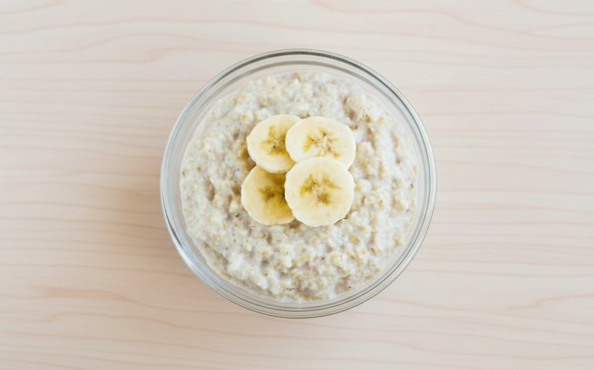
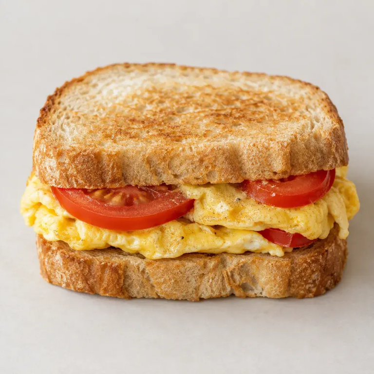
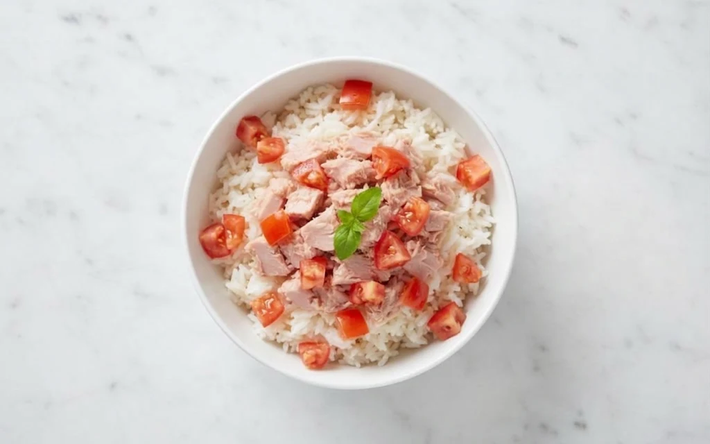
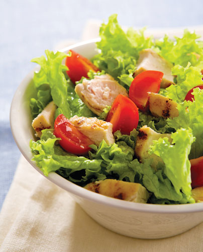
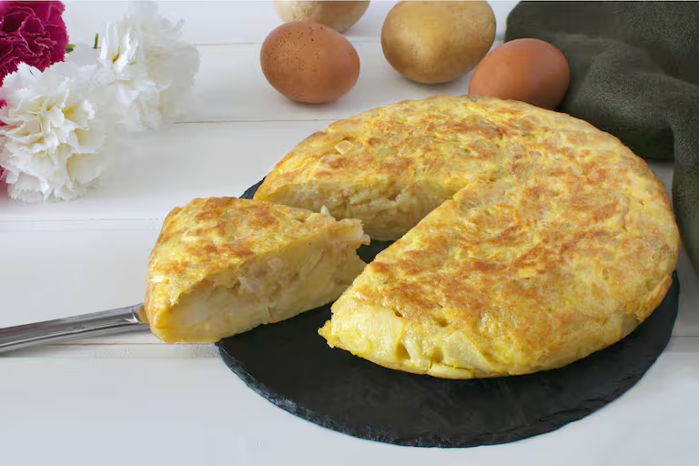

Avena con plátano
S/ 3.50Desayuno · 10 min · Dificultad fácil
½ taza de avena · 1 plátano · 1 taza de leche
MODO UNIVERSIDAD · RICO, RÁPIDO Y A TU ALCANCE
Recetas sencillas, económicas y listas antes de que termine tu pausa.
Selecciona lo que tienes en casa o en el campus.
Al elegir ingredientes, verás recetas que usan al menos uno de ellos. Sin selección, se muestran todas.
Ajusta los filtros y elige en segundos.

Desayuno · 10 min · Dificultad fácil
½ taza de avena · 1 plátano · 1 taza de leche

Almuerzo · 12 min · Dificultad fácil
2 panes · 2 huevos · 1 tomate

Almuerzo · 14 min · Dificultad fácil
1 taza de arroz cocido · 1 lata de atún · ½ tomate

Almuerzo · 13 min · Dificultad fácil
1 filete de pollo · 2 tazas de lechuga · 1 tomate

Cena · 18 min · Dificultad fácil
1 papa mediana · 2 huevos · ¼ cebolla
No encontramos recetas con esos filtros. Prueba quitando uno.